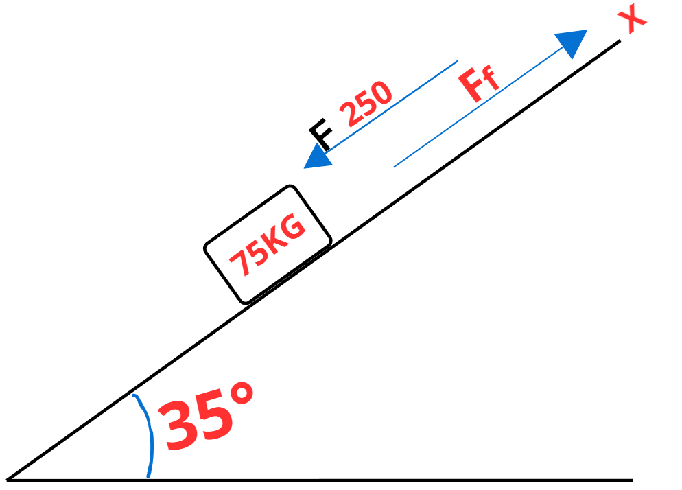
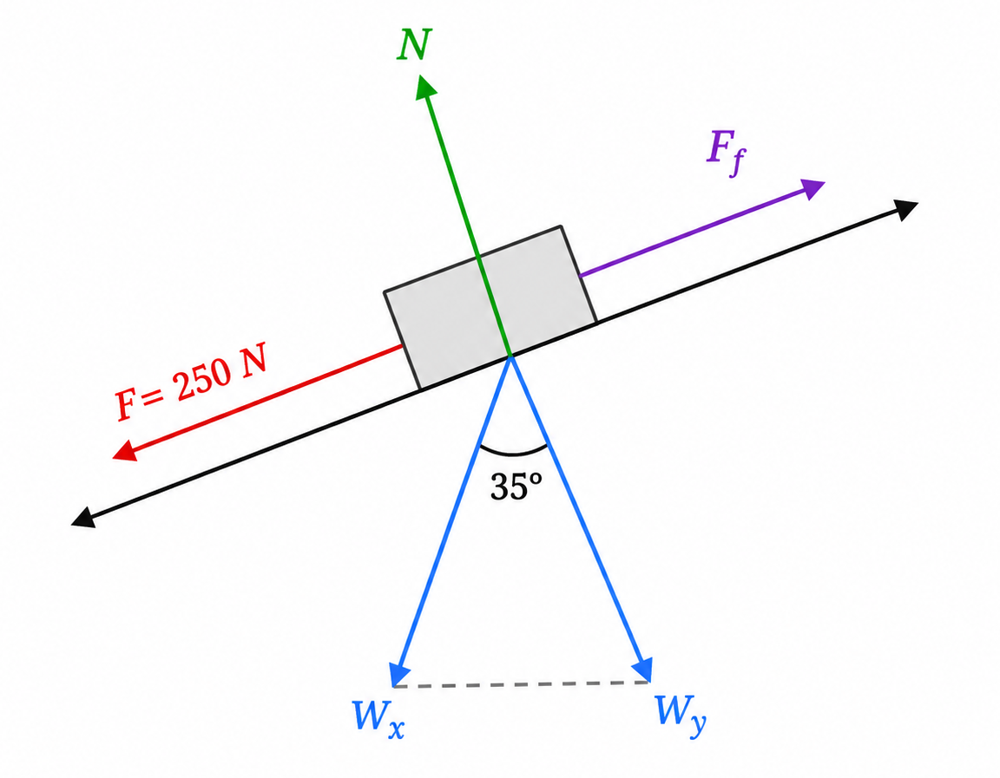
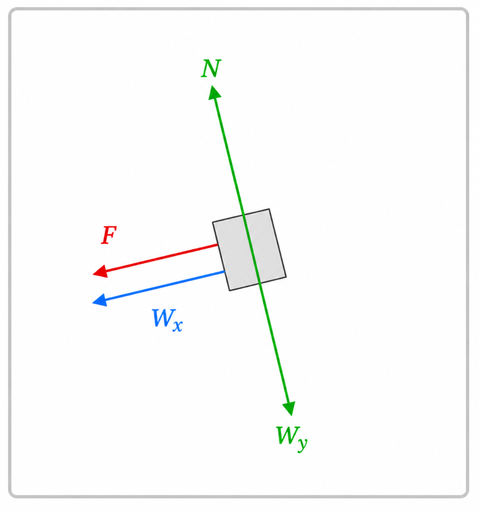

Un bloque de 75 kg es empujado con una fuerza de 250 N en un plano inclinado a 35° con la horizontal
A- Calcular la aceleración del bloque considerando un coeficiente de fricción cinética (Uk) de 0.3
B- Calcular la aceleración del bloque sin considerar fricción


